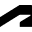
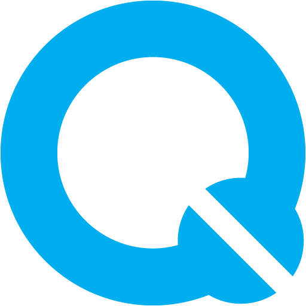
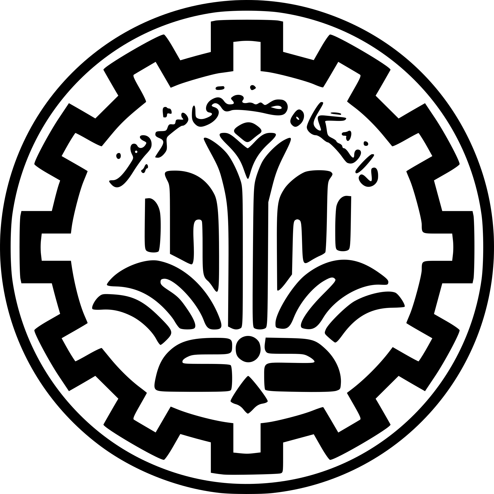

دادهٔ مرجع
بازسازی NeuralDMD
یادگیری ماشین · بینایی کامپیوتر · فیزیک
دانشجوی دکتری علوم کامپیوتر دانشگاه تورنتو
من دانشجوی دکتری علوم کامپیوتر در دانشگاه تورنتو هستم و پیشینهای در فیزیک دارم. پژوهشهایم در زمینهٔ هوش مصنوعی، بینایی کامپیوتر، دینامیک سیستمهای فیزیکی و مدلسازی مولد سهبعدی است.
در حال حاضر پژوهشگر کارآموز در Autodesk Research ↗
من دانشجوی دکتری علوم کامپیوتر در دانشگاه تورنتو و وابسته به مؤسسهٔ وکتور هستم و زیر نظر Aviad Levis و David Lindell پژوهش میکنم. عضو گروه PI-Vision و گروه تصویربرداری محاسباتی تورنتو (TCIG) هستم. پیش از دکتری، در دانشگاه صنعتی شریف فیزیک خواندم و کارشناسی ارشد فیزیک و اخترشناسی را در دانشگاه واترلو و مؤسسهٔ پریمیتر گذراندم.
پیشینهٔ تحصیلی و پژوهشی من فیزیک، هوش مصنوعی و بینایی کامپیوتر را در بر میگیرد. در Autodesk Research روی بهینهسازی توپولوژی برای مدلسازی مولد سهبعدی و طراحی رویهای سهبعدی با عاملهای هوش مصنوعی کار میکنم. پروژههای دانشگاهی من شامل بازنمایی عصبی دینامیک سیستمهای فیزیکی، تصویربرداری سیاهچالهها و استنباط پارامترهای فیزیکی است.
پروژههایی در بینایی کامپیوتر و یادگیری ماشین برای علوم.
بازنماییهای عصبی، مدلهای مولد و پیشبینی دنبالهها.
دینامیک سیستمهای فیزیکی، تصویربرداری سیاهچالهها و استنباط پارامترها.
بهینهسازی توپولوژی و طراحی رویهای با عاملهای هوش مصنوعی در Autodesk Research.
بینایی کامپیوتر، اخترفیزیک و فیزیک کوانتومی.
پژوهش دانشگاهی و صنعتی در زمینهٔ یادگیری ماشین، مدلسازی مولد سهبعدی، تصویربرداری محاسباتی و تصحیح خطای کوانتومی.
رزومهٔ کامل (انگلیسی) ↗Python · JAX · PyTorch
پردازش گرافیکی و محاسبات با کارایی بالا
اوت ۲۰۲۶ — تاکنون

Autodesk Researchپژوهشگر کارآموز
بهینهسازی توپولوژی برای مدلسازی مولد سهبعدی و طراحی رویهای سهبعدی با عاملهای هوش مصنوعی.
۲۰۲۴ — تاکنون
پژوهشگر دکتری · استادان راهنما: Aviad Levis و David Lindell
یادگیری ماشین و تصویربرداری محاسباتی، از جمله پروژههای NeuralDMD و BHCast.
۲۰۲۲ — تاکنون
پژوهشگر تحصیلات تکمیلی
مدلهای مولد جانشین برای تصاویر سیاهچالهها، استنباط کالیبرهشده و کاهش اثر پراکندگی.
۲۰۲۳ — ۲۰۲۴

1QBitپژوهشگر کارآموز · یادگیری ماشین و رایانش کوانتومی
رمزگشاهای بازگشتی برای تصحیح خطای کوانتومی؛ از مخترعان یک درخواست ثبت اختراع منتشرشده در آمریکا ↗.
تحصیلات
دکتری علوم کامپیوتر · پایان مورد انتظار: ۲۰۲۸
کارشناسی ارشد فیزیک و اخترشناسی

دانشگاه صنعتی شریفکارشناسی فیزیک · رشتهٔ فرعی علوم کامپیوتر
کنفرانس دانشجویان تحصیلات تکمیلی مؤسسهٔ پریمیتر
رویداد ↗ارائهٔ پوستر NeuralDMD در ECCV ۲۰۲۶، ICCP ۲۰۲۵ و SMBH ۲۰۲۶.
دستیار آموزشی درس CSC320: Introduction to Visual Computing در دانشگاه تورنتو (۲۰۲۴–۲۰۲۵). پیش از آن، در تدریس درسهای فیزیک در دانشگاه صنعتی شریف نیز همکاری داشتهام.
راهنمایی پروژههای پژوهشی دانشجویان کارشناسی در زمینهٔ توموگرافی سیاهچالهها را بر عهده دارم. همچنین در راهنمایی پژوهشی دربارهٔ کاهش اثر پراکندگی که در The Astrophysical Journal منتشر شده، همکاری داشتهام.